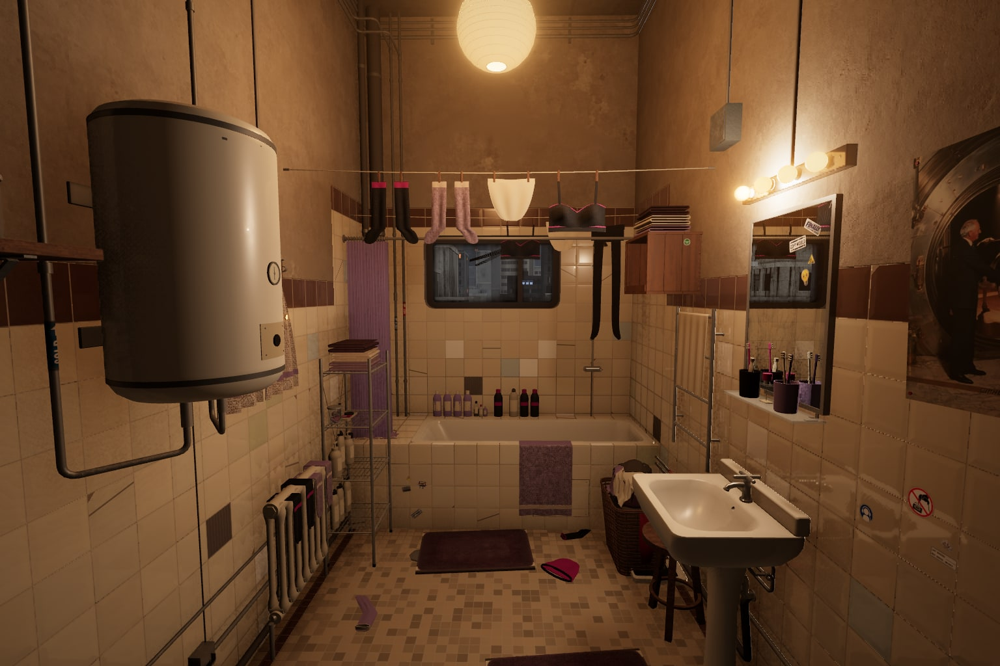
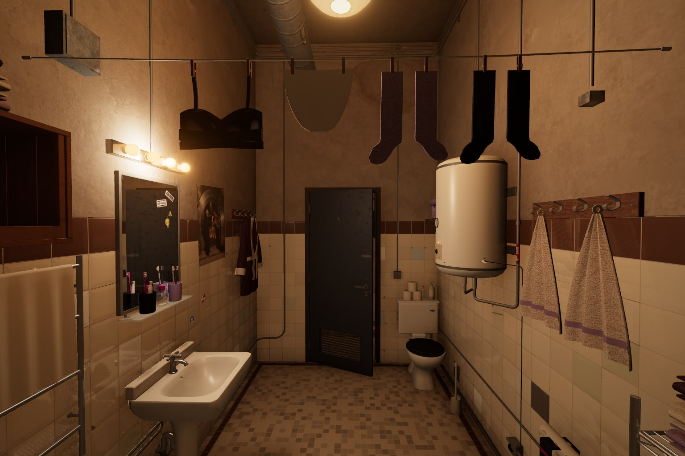

Leg City Sounds · Apartment
The bathroom · three polish passes
Finer washed fabric, softer free towel hems and unequal sock drops, with used coating on the cream boiler. The lamps keep their warm character, and the dirty mirror reflects the finished room. Both views below are from the live apartment.
Both room angles · before and after
After · accepted polish
 Open full size
Open full size Open full size
Open full sizeA dirty mirror that reflects the room
 Open full size
Open full size Open full size
Open full size


Daylight, night and the curtain


The three review cycles
Cycle 1 was rejected: coarse fiber loops made the towels too grainy. Cycle 2 used quieter fabric and softened free hems and sock drops. Cycle 3 added used boiler coating and a subtle lamp-balance adjustment; its accepted result is shown above.





Approved concepts · 10 October 2026
 Open full size
Open full size
 Open full size
Open full size